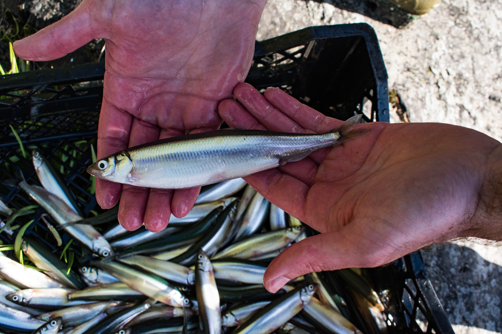
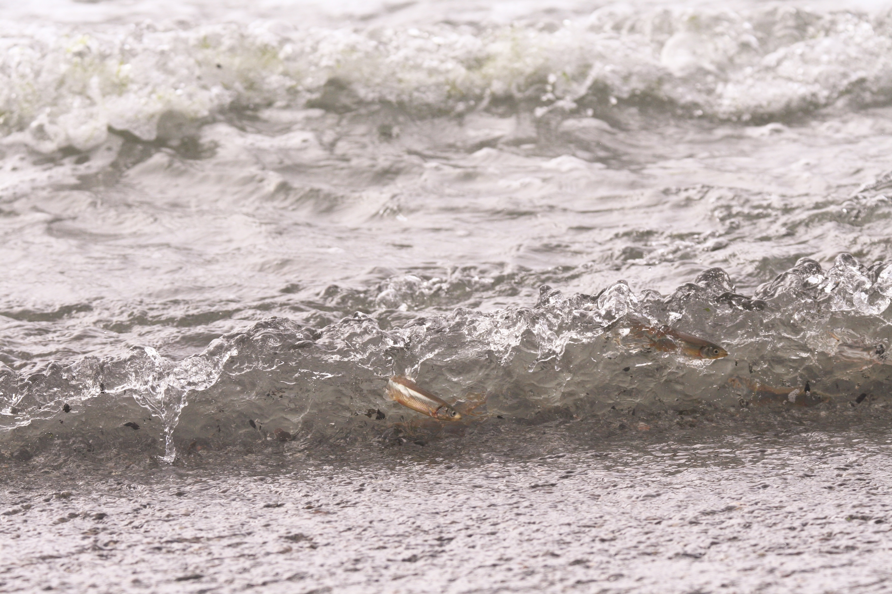

Like a Fish Out of Water
Seasonal variation in spawning habitats and spatio-temporal genetic adaptation of a vulnerable species
Surf Smelt (Hypomesus pretiosus)
What is a surf smelt?

Surf smelt are a forage fish endemic to the Pacific coast of North America, found all the way from Southern California to the Alaskan Peninsula. Forage fish are small super-abundant fish species that are crucial links in the transfer of energy from primary producers (e.g., phytoplankton) to predators in higher trophic levels. In the case of the surf smelt in Washington, these predators include seabirds, marine mammals, and commercially important salmon species.
Spawning Behavior

Surf smelt deposit their eggs in the upper intertidal zone of marine and estuarine beaches during high tide. The eggs attach to sediment grains and remain unsubmerged for about two weeks until the next high tide flushes the larvae into the water. This dry incubation is essential for egg survival, potentially preventing fungal infections.
Spatio-temporal Variation in Spawning
Within Washington State waters, surf smelt spawn nearly year-round, with activity peaks in summer (July–August) and winter (November–December). Regional patterns differ:
- Puget Sound: Predominantly winter spawning
- Outer Coast and Strait of Juan de Fuca: Predominantly summer spawning
- Skagit Bay and San Juan Islands: Year-round spawning
Environmental variables—dissolved oxygen, temperature, salinity, and wave action—vary across regions and seasons. Such variability may drive behavioral plasticity or temporal reproductive isolation among Washington surf smelt populations.
Vulnerability
Surf smelt depend on healthy intertidal habitats for reproduction. One of the biggest threats to the intertidal zone is a phenomenon known as coastal squeeze. When artificial shorelines such as seawalls are built, they halt the natural resupply of sediment via backshore erosion. As the tide continues wash away sediment from the beach there is no new sediment to replace it, resulting in a flattening of the beach profile. Pairing this with sea level rise means that the intertidal zone continually shrinks with rising sea levels, eventually leading to a total loss of intertidal habitat. This would result in a catastrophic decline in surf smelt populations, which would have cascading effects on the entire marine ecosystem.
Research Goals
Population Genetics
We will evaluate spatio-temporal genetic variation in Washington surf smelt by whole-genome sequencing eggs, larvae, and tissue from spawning adults across regions and seasons. Using this data we will analyze population structure and look for genomic islands of divergence that may result from selective pressures or structural variation in the genome. This will help us understand how surf smelt populations have adapted to their environments and how they may respond to future changes.
Spawning Habitat Surveys
Using the Washington Department of Fish and Wildlife’s Forage Fish Spawning Database, we will identify beaches with high spawning activity at different times of year. Field measurements at these sites will include sediment grain size, temperature, salinity, dissolved oxygen, and wave action. Integrating environmental and genetic data will help identify adaptive strategies used by surf smelt to cope with seasonal habitat variability.
Current Projects
- Population genetics analysis
- Spawning Habitat Modeling
- Beach Surveys
Recent Updates
Add your latest findings and updates here.